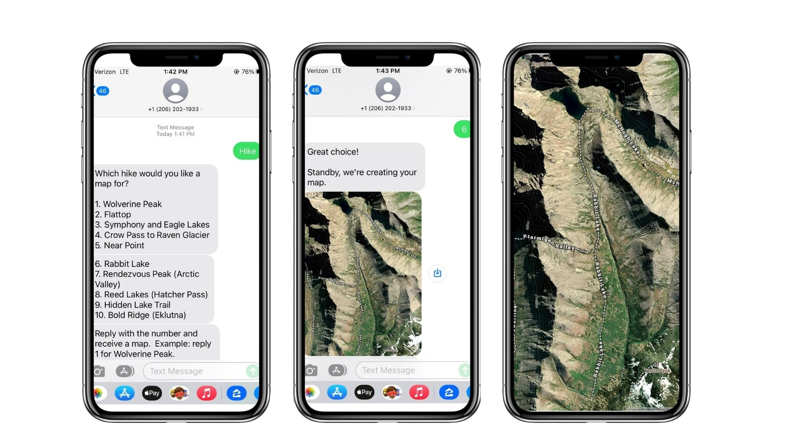
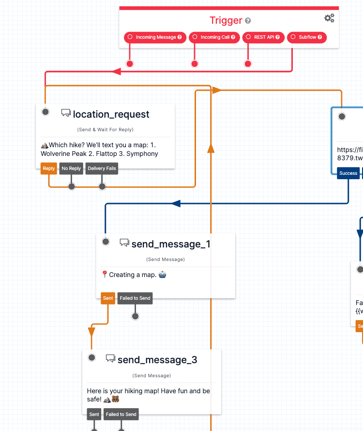
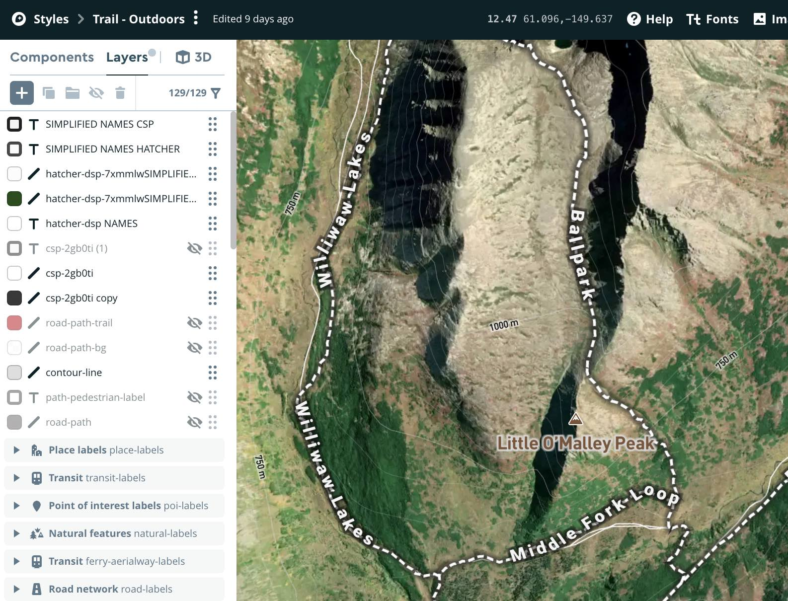

Experimental Anchorage SMS Hiking Map Textbot
TL:DR Text ‘hike’ to 206-202-1933 to get a hiking map sent to your phone. #

Sometimes you need a map for even the shortest hikes or bike rides. (I’ve gotten lost on extremely well-used trails.) I use the Strava and Gaia apps, but I wanted something simpler. Way simpler.
I wanted to find a way to generate static outdoor maps that you can have on your phone. No data service or GPS or anything is required. Because I love a dead-simple interface, I made a SMS texting bot.
📱 Text HIKE to 206-202-1933 to get a hiking map sent to your phone. #

I’m starting with 10 hikes near Anchorage, Alaska. I’ve done most of them.
There are four pieces that make this work:
- Twilo Studio Flow
- Twilo Studio Function
- Custom Mapbox style
- Mapbox static API
Twilo Studio Flow #
A Twilio Studio Flow is a visual representation of the logic for the SMS. It’s very powerful but easy enough to get up and running almost instantly. This is where the basic scripting, error checking, and logic is set.

Twilo Function #
A twilio function can do…a lot…, but all I use it for is providing the JavaScript function to tranlate the user input and determine the correct map to send back. I configured maps for 10 hikes. The logic looks largely something like this:
exports.handler = function(context, event, callback) {
const hikes = [
{
"hike_name": "Flattop",
"hike_index": 2,
"url" :"https://api.mapbox.com/styles/v1/style_id/static/-149.60101,61.0844,13.43,78.7,0/800x1280@2x",
},
{
"hike_name": "Wolverine Peak",
"hike_index": 1,
"url" :"https://api.mapbox.com/styles/v1/style_id/static/-149.60101,61.0844,13.43,78.7,0/800x1280@2x",
} // more hikes //
]
const hikes_filtered = hikes.filter (d=> d.hike_index == selected_hike)
callback(null, {result: hikes_filtered[0].hike_name, map_url: hikes_filtered[0].url });
};Custom Mapbox style #
The Mapbox style I made starts with a mix of the Satellite and Outdoors. I made this with a lot of trial and error in Mapbox Studio. I added in more trail geometry from Alaska State Park and massive custom trail labels. I also removed what I didn’t want. There are contours if you look closely.

Mapbox Static Images API #
The Mapbox Static Images API generates the map images on the fly. The importat pieces of data I pass are the center latitude, longtidue, zoom level, and my custom map style. It then generates a JPEG located at and endpoint that is returend to the twilio function and flow. This custom phone-shaped JPEG is sent to the user. It has surprisingly high resolution!
// sample static image url:
https://api.mapbox.com/styles/v1/style_id/static/-149.60101,61.0844,13.43,78.7,0/800x1280@2x
Here are the 10 hikes in there for now.
- Wolverine Peak
- Flattop
- Symphony and Eagle Lakes
- Crow Pass to Raven Glacier
- Near Point
- Rabbit Lake
- Rendezvous Peak (Arctic Valley)
- Reed Lakes (Hatcher Pass)
- Hidden Lake Trail
- Bold Ridge (Eklutna)
Try it out yourself!
Text HIKE to 206-202-1933
*I will probably shut this down after a bit due to SMS costs.